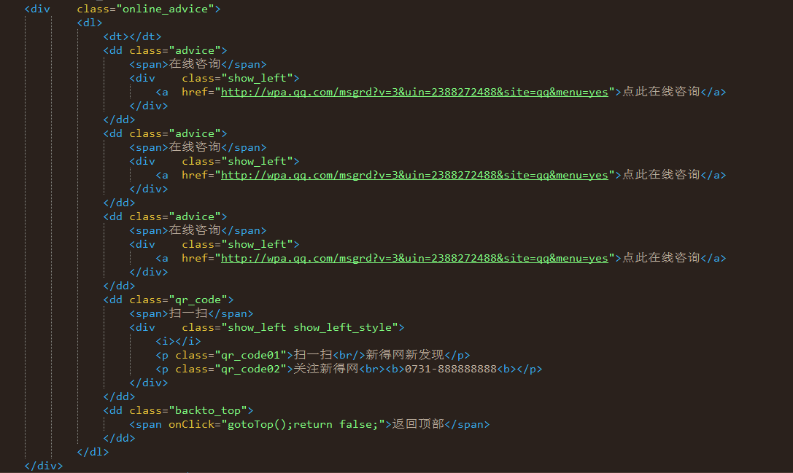
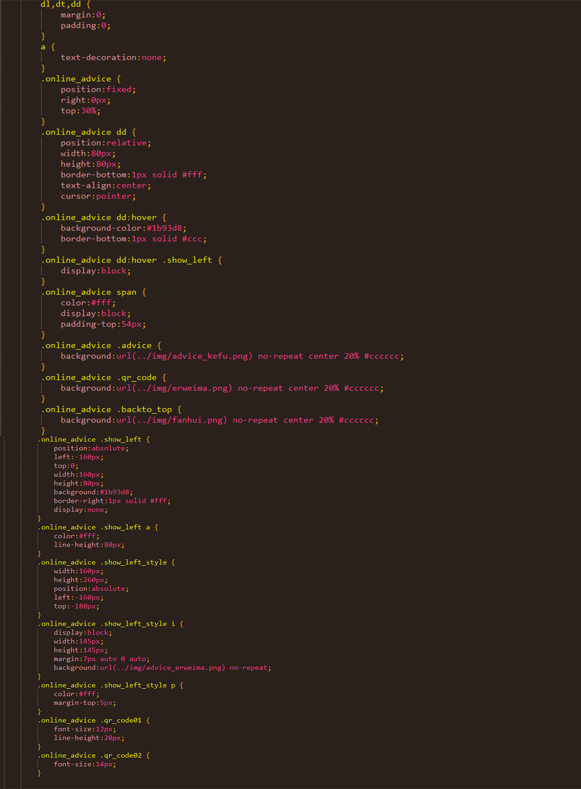

原生实现网页右侧在线客服功能
本文为原创文章，转载请注明出处！
今天介绍的是一个很常见并且很实用的一个页面功能——在线客服。相信很多朋友在浏览网站时，都可以在页面右侧或者左侧看到过类似功能的服务。有时页面内容不是很详细或者存在疑问，我们可以通过这个“在线客服”功能进行在线的咨询，可以说是一个很贴合实际、人性化的功能模块。如果你之前没有接触过类似功能模块的开发，或者曾经你觉得这个“在线客服”功能很繁琐，相信看过这篇详细介绍的技术说明后，你会顿时云开雾散，当然看的时候觉得容易，一定要自己亲手敲一遍代码才能领略其中的真谛！
一.分析“在线客服”功能构成
1.首先这个在线客服功能模块需要使用固定布局，以便拖动滚动条时可以固定在窗口的一个位置
2.根据展示客服多少，可以选择用ul或者dl进行放置内容，这里我用的dl
3.按需展示和隐藏在线客服
二.各个击破进行编程
1.在线客服模块的html结构层展示
2.在线客服模块的css样式层展示
到这一步，在线客服功能模块就完成了，照着上面的代码敲一遍，相信记忆会更深刻！